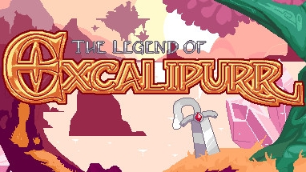

The Legend of Excalipurr
Weapon Design
Sword Physics

Excalipurr itself is your primary attack for nearly the entire game, so I needed to ensure that it felt perfect to use. The game has a great deal of verticality, and landing the quick sword swing midair proved to be more difficult than I was happy with. I added a little bounce (which I ended up calling a "sword hop") to airborne strikes, and it made landing attacks against an intended target much easier. The second attack (the thrust) has less bounce on it and more delay at the end to ensure you can't stall in midair for longer than feels right.
Sword hopping proved to be a lot of fun, so I added an extra use for it. If timed at the height of a jump, a sword hop allows the player to reach just one tile higher. This added a lot of opportunity for level design, especially in creating shortcuts and tough to reach areas. I liked the idea of each item being useful for more than just combat, and Excalipurr was no exception.
Hammer Impact
Sword physics.
Weapon Swapping
Sword physics.
Enemy Design
Boxer Boss
Sword physics.
Level Design
Level Pacing
Sword physics.
Showing Surfaces
Sword physics.
"If it looks like you can, you can"
Sword physics.